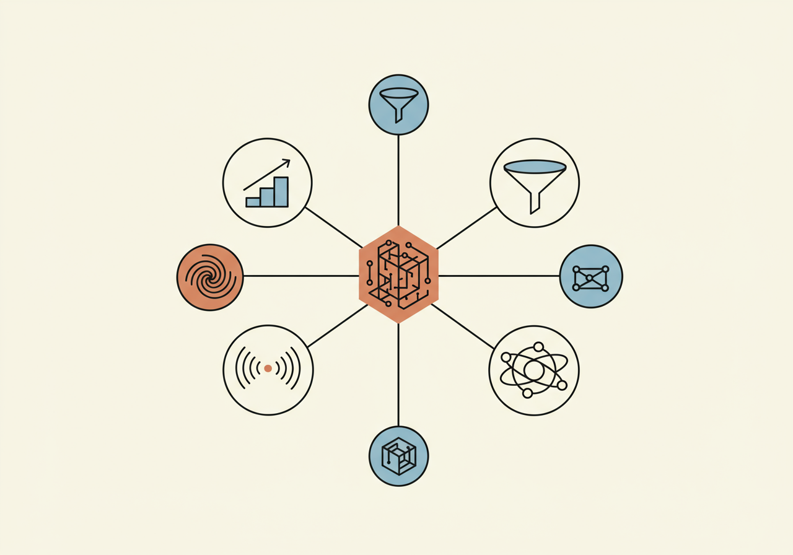
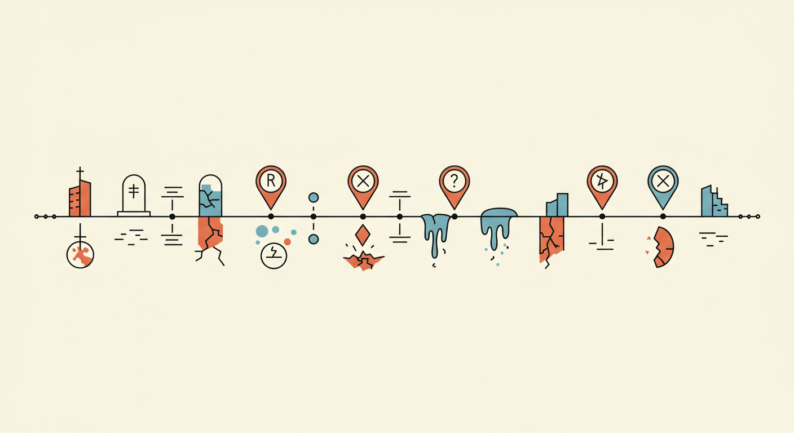

Foundation models reshuffle the market every six months. Most playbooks were written for a different world. This one wasn't.
Six mental models, each one backed by empirical evidence — never a hot take. If a tactic doesn't trace back to one of these, it doesn't belong in this repo.

Static ICP rots in 30 days. AI-native ICP has three dimensions traditional SaaS doesn't: LLM Maturity Stage, Data Residency × Deployment, Model Spend Trajectory.
Replace value pillars with five rungs of proof. Cursor scaled to $2B ARR with zero marketing because the product was the proof at every rung.
Anthropic's enterprise logos are 54% self-serve. Bolt.new hit $40M ARR in 5 months without outbound. Lovable hit $100M in 8 months via founder Twitter.
Jasper's ARR went from $90M projected to ~$55M after GPT-3.5. Chegg lost 48% market cap in one day. Character.AI sold for $2.7B in a reverse acqui-hire.
v0 reached 4M users by riding Vercel's 6M-developer base. Every v0 generation has a "Deploy to Vercel" button. The integration is the GTM.
10,000+ public MCP servers shipped in H2 2025. Anthropic donated MCP to the Linux Foundation. If your product isn't callable by Claude or Cursor in 2026, you're invisible.
Clone the repo. Fill in context/ once. Run GTM tasks from a single prompt. The institutional knowledge persists in git, grows weekly, and arrives context-rich into every Claude Code session.
2022 to 2026. Every case sourced from public reporting with URLs. Use these as anchors when filling context/competitor-radar.md Section 2.

MIT license. Use it, fork it, ship it. Attribution appreciated, not required. 42 files, 5,353 lines, six constitutions, ten real death cases, twenty-two signal sources.
950 lines. 250+ URLs. Every claim cited. Updated as new cases emerge.
Ten AI startup death cases from 2022 to 2026. Three AI-native ICP dimensions traditional SaaS doesn't have. Five early-warning signals.
Read →Anthropic's MCP land grab. Cursor's zero-marketing $2B ARR. Lovable's founder tweet engine. Cline's anti-Cursor moral narrative.
Read →The AI-native signal library plus 12 pricing teardowns with live numbers and five anti-SaaS pricing rules.
Read →